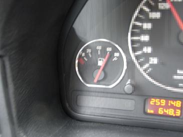 当日は、8時に美合PAでアルタァさんと集合の約束を＾＾ 1時間あれば着くと思って7時に家を出たものの、、ナビの到着予定時間を見てみると・・・「8時35分着」に（汗 |
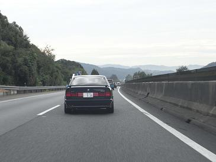 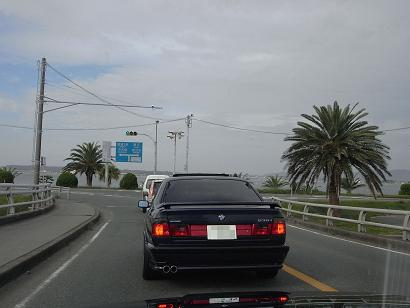 アルタァ号に続いて会場へ向かいます。 浜松西で降りて、海沿いをすすみます。
|
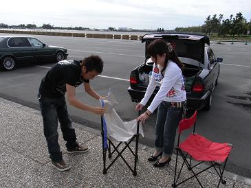 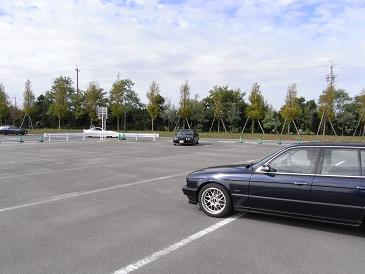 到着するのが早過ぎました。しかし、現場にはTKさんが＾＾ その後、続々と集まってくる旧車たち（爆
|
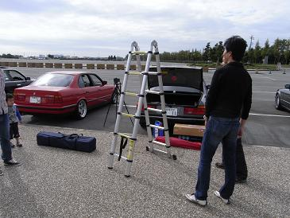 あるぴな小僧号のトランクから、まるで四次元ポケットにように出てくる機材たち。 テントにテーブルに脚立にイスに部品に・・・ さすがです！
|
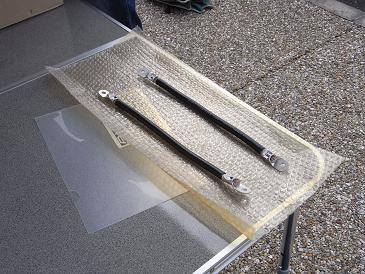 で、そのアルピナ小僧さんが出してこられた部品にコレが。 「つばめ企画」によるアースケーブルなんだとか（怪 １本はジャーク号に。 もう１本は「欲しい人に」ってことだったので、もらっちゃいました。 つばめさんありがとうございま〜すm(__)m 後々メンテレポでUPします。
|
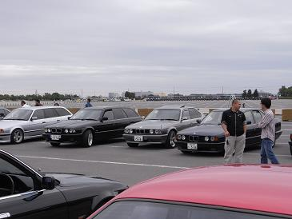 そんなことしてると、良く見かける関西軍団が会場入り＾＾
|
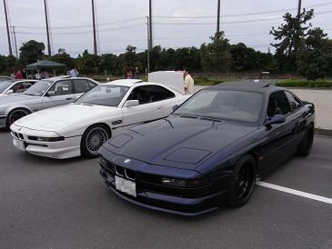 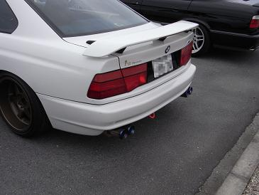 今回は8シリーズも4台ほど＾＾ 街中で8シリーズなんて跳馬よりも見かけませんよね。 このフォルム、完全にスーパーカーですよ！ 今回の幹事MASA坊さんのM5のエンジンをコンバートしたnweMASA坊号！ エンジンの収まりも純正チックでたまりません。 写真右の白い8シリーズがDOP号！ このチタンマフラー すごい迫力です。
|
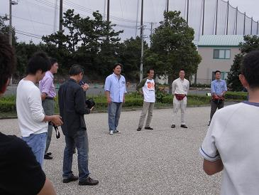 適当にウダウダしたところで、開会式です。 車に置くネームカードとオーナーに着けるネームプレートが配られました。 これのおかげで、名前は知っているけど･･･ って方に声がかけやすかったです＾＾
|
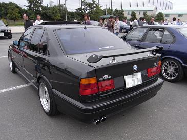 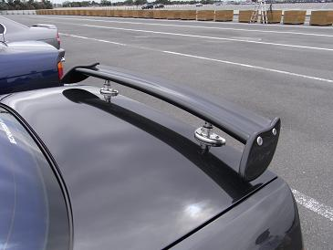 ２年ぶりに再会した過激派？！535乗り くにぞー号＾０＾ 以前に拝見したときよりも各パーツがグレードアップしていました。 この羽も個性的で良いですねぇ〜！
|
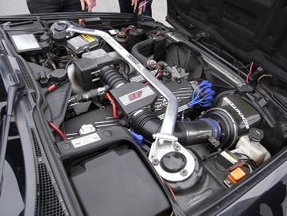 エンジンもメンテからチューニングまで一通りされています。 535乗りがただでさえ少ない中、更に‘走り’の方向へ振っているオーナーはほとんどいないので、、 「あそこを○○するとM30は4000回転辺りで息継ぎしますよね」 「その解決にはあれを使って･･･」や「燃圧を上げようかと・・・」 などなど、M30にまつわるマニアックな会話が続きました。 また新たなる煩悩がぁぁぁ〜！ 来年の春辺りに走行会オフミでも企画してみようかな。 このような交流がE34を維持していくモチベーションを向上させていく。 そして更なる泥沼へとはまっていくのだ。
|
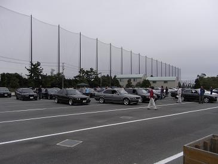 集合写真を撮りましょう。 ってことで並べ替えです。
|
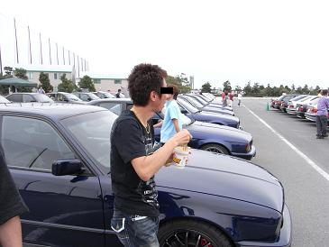 「俺様が飯中に集合写真とは何事じゃ〜！」とカップメンを持ちながら集合するアルタァさん（嘘 今日も金色のネックレスがお似合いです（爆
|
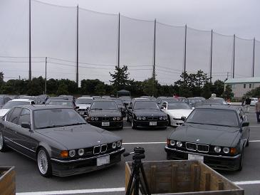 こんな感じで並びました。 ってまったくわかりませんね。 そのうち各方面で公開されると思います。
|
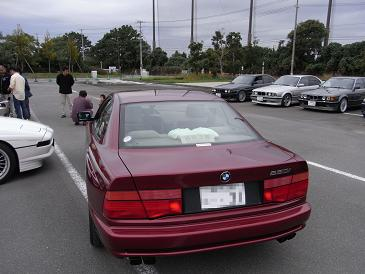 バブル期の試乗会場のような（笑 幹事のMASA坊さん、ネームプレートを作っていただいたスタッフの方々ありがとうございました。 久々に会えた方もいて満足した1日でした。
|